Тема 1.2: Основы динамики
Законы Ньютона, силы в природе, статика и биомеханика • 6 академических часов
1. Взаимодействие тел. Законы Ньютона
Динамика — раздел механики, изучающий причины изменения движения тел.
- I закон (инерции): Существуют системы отсчета (инерциальные), в которых тело покоится или движется равномерно и прямолинейно, если на него не действуют силы или их действие скомпенсировано.
- II закон: Ускорение тела прямо пропорционально равнодействующей сил и обратно пропорционально массе тела.
- III закон: Силы, с которыми два тела действуют друг на друга, равны по модулю, противоположны по направлению и действуют вдоль прямой, соединяющей эти тела.
2. Сложение сил (Принцип суперпозиции)
Силы — векторные величины. Если на тело действует несколько сил, их заменяют равнодействующей.
- Силы сонаправлены (угол 0°): Fрез = F1 + F2.
- Силы противоположны (угол 180°): Fрез = |F1 - F2|.
- Силы перпендикулярны (угол 90°): Fрез = √(F12 + F22) (по теореме Пифагора).
3. Сила упругости. Закон Гука
Возникает при деформации тела и стремится вернуть его в исходное состояние. Направлена противоположно деформации.
4. Сила трения
Возникает при соприкосновении поверхностей и препятствует их относительному перемещению.
Виды трения: покоя, скольжения, качения. Также выделяют сухое и жидкое трение.
Максимальная сила трения покоя и сила трения скольжения (при небольших скоростях) пропорциональны силе нормальной реакции опоры:
5. Закон всемирного тяготения
Все тела во Вселенной притягиваются друг к другу с силой, прямо пропорциональной произведению их масс и обратно пропорциональной квадрату расстояния между ними.
Сила тяжести (Fтяж) — это сила, с которой Земля притягивает к себе тело.
6. Вес тела. Невесомость. Перегрузки
Вес тела (P) — сила, с которой тело давит на опору или подвес. В покое P = m * g.
Перегрузка: Возникает при движении с ускорением вверх (или торможении вниз).
Частичная невесомость: Возникает при движении с ускорением вниз (или торможении вверх).
Невесомость: Возникает при свободном падении (a = g).
7. Космические скорости
Первая космическая скорость (v1) — минимальная скорость для выхода на орбиту вокруг планеты (для Земли ≈ 7,9 км/с).
Вторая космическая скорость (v2) — скорость для преодоления гравитации планеты и выхода в космос (для Земли ≈ 11,2 км/с).
8. Равновесие тел. Момент силы
Абсолютно твёрдое тело — физическая модель реального тела, деформации в котором малы (отсутствуют).
Центр тяжести (центр масс) — точка, к которой приложена равнодействующая всех сил тяжести, действующих на элементы тела.
Виды равновесия:
- Устойчивое: при малом отклонении возникает сила, возвращающая тело в исходное положение.
- Неустойчивое: при малом отклонении возникает сила, уводящая тело ещё дальше от положения равновесия.
- Безразличное: при отклонении тело остаётся в равновесии в новом положении.
Момент силы (M) — физическая величина, характеризующая вращательное действие силы на тело. Равен произведению модуля силы на её плечо.
Если сила стремится раскручивать тело против часовой стрелки, момент считается положительным (M > 0). Если по часовой — отрицательным (M < 0).
Условия равновесия твёрдого тела:
- Векторная сумма всех действующих на тело сил равна нулю: F₁ + F₂ + ... + Fₙ = 0.
- Алгебраическая сумма моментов всех сил относительно любой оси равна нулю: M₁ + M₂ + ... + Mₙ = 0.
Векторы сил, действующих на тело
🎯 Шпаргалка для Практической работы №2
Формулы, которые понадобятся для решения задач:
1. Связь кинематики и динамики:
Если известны путь S и конечная скорость v (начиная с нуля): ускорение a = v² / (2S). Затем по II закону Ньютона: F = m * a.
2. Сила трения:
Fтр = μ * N. Если тело на горизонтальной поверхности, N = m * g.
3. Система связанных тел (блок):
Ускорение: a = (m₁ - m₂)g / (m₁ + m₂).
Сила натяжения нити: T = 2m₁m₂g / (m₁ + m₂).
4. Механическая прочность (давление/напряжение):
σ = F / S, где F — сила (Н), S — площадь (м²). Отсюда сила: F = σ * S.
📝 Примеры решения типовых задач
Пример 1 (II закон Ньютона): Тело массой 2 кг движется с ускорением 3 м/с². Какая сила действует на тело?
Решение: F = m * a = 2 кг * 3 м/с² = 6 Н.
Пример 2 (Перегрузка): Космонавт массой 80 кг находится в ракете, которая стартует с ускорением 20 м/с². Каков вес космонавта? (g = 10 м/с²).
Решение: Ракета движется вверх с ускорением, значит возникает перегрузка. P = m * (g + a) = 80 * (10 + 20) = 2400 Н.
🩺 Связь с медициной
- Перегрузки: Летчики и космонавты испытывают перегрузки до 5-9g. Это вызывает отлив крови от головы к ногам и может привести к потере сознания.
- Невесомость: В космосе отсутствие гравитационной нагрузки приводит к потере костной массы (остеопороз) и атрофии мышц.
- Ортостатический коллапс: При резком вставании возникает эффект "частичной невесомости" для крови — она отливает от мозга.
- Сила упругости в медицине: Эластичность сосудов, сухожилий и хрусталика глаза основана на законе Гука.
🧪 Быстрый опыт: Измерение времени реакции
Ход: Один студент держит линейку (отметка 0 см между пальцами второго). Отпускает без предупреждения. Второй ловит. Расчет времени: t = √(2h / g). Норма для человека 0,15–0,25 с.
Подробная теория (для самостоятельного изучения)
1. Инерция. Первый закон Ньютона
Инерция — это явление сохранения скорости движения тела при отсутствии внешних воздействий.
💡 Обрати внимание!
По закону инерции, материальная точка сохраняет свою скорость при отсутствии воздействия на него внешних сил или при уравновешивании действия этих сил.
С явлением инерции мы сталкиваемся ежедневно, поэтому необходимо знать её положительные и отрицательные свойства. При ловле мяча нужно отступать по траектории движения, смягчая удар. Иначе можно получить травму. При торможении транспорта необходимо постараться продолжить движение по прежней траектории, чтобы избежать столкновения с деталями транспорта.
До принятия закона инерции древнегреческий учёный Аристотель и его последователи считали, что тело не может двигаться с постоянной скоростью без постоянного воздействия внешних сил.
Первым отверг такие представления Галилео Галилей. Он предположил, что в результате взаимодействий любого тела с другими телами происходят изменения скорости его движения. При отсутствии действия других тел скорость тела не изменяется ни по модулю, ни по направлению. Таким образом, Галилей пришёл к выводу:
При отсутствии внешних воздействий тело может не только покоиться, но и двигаться прямолинейно и равномерно.
Внешние силы необходимы для компенсации потерь энергии из-за силы трения.
💡 Обрати внимание!
После прекращения воздействий тело движется равномерно и прямолинейно по касательной к первоначальной траектории движения.
На основе вывода Галилея английский учёный Исаак Ньютон сформулировал закон инерции.
Если на тело не действуют силы или их действие скомпенсировано, то данное тело находится в состоянии покоя или равномерного прямолинейного движения.
Закон инерции называют первым законом Ньютона, или первым законом механики.
Инертность — это свойство тела, которое характеризует его способность «сопротивляться» изменению скорости.
Насколько инертным является тело, определяется его массой (в физике вводится термин «инертная масса»).
2. Инерциальные и неинерциальные системы отсчета
Со временем выяснилось, что первый закон Ньютона выполняется не во всех системах отсчёта.
Проведём опыт. Подвесим над тележкой один шарик, а другой положим внутрь грузового отсека тележки. Запустим установку так, чтобы она двигалась по поверхности стола с постоянной скоростью в одном направлении.

1. Сила тяжести первого шарика уравновешена силой натяжения троса, поэтому нет движения вертикального направления: T1 + m1g = m1a.
2. Сила тяжести второго шарика уравновешена силой реакции опоры, поэтому нет движения вертикального направления: N2 + m2g = m2a.
3. Сила тяжести всей системы тележки с шариками уравновешена силой реакции опоры (Земли), поэтому нет движения вертикального направления: N3 + (m1+m2+m3)g = (m1+m2+m3)a.
В горизонтальном направлении нет сил, которые бы изменяли скорости движения шариков и тележки. Поэтому скорость движения всей системы и каждого элемента в горизонтальном направлении постоянна: v = const.
Но когда тележка попадёт на песочную насыпь, то она быстро остановится, так как её скорость быстро уменьшается. При снижении скорости шарики начинают двигаться относительно тележки по инерции. В этом случае изменение скорости шариков не связано с действием на них каких-либо сил.

В системе отсчёта, связанной с тележкой, движущейся с ускорением (в данном случае с замедлением), закон инерции не выполняется.
Если тело относительно системы отсчёта имеет ускорение даже в отсутствие действия на него других тел или внешних сил, то в такой системе не выполняется закон инерции.
Первый закон Ньютона: всегда можно найти инерциальную систему отсчёта, в которой выполняется закон инерции: если на тело не действуют силы или их действие компенсировано, то тело будет находиться в состоянии покоя или двигаться прямолинейно и равномерно.
Первый закон Ньютона устанавливает существование инерциальных систем отсчёта (ИСО).
Неинерциальными называют системы отсчёта, в которых закон инерции не выполняется.
Одно и то же тело может находиться в состоянии покоя в одной системе отсчёта и двигаться с ускорением в другой системе отсчёта.
Пример: в самолёте, пикирующем вниз с ускорением свободного падения, пилот находится в состоянии покоя в системе отсчёта, связанной с самолётом. Одновременно в системе отсчёта, связанной с Землёй, этот пилот движется вместе с самолетом с ускорением свободного падения.
В большинстве вопросов о движении на поверхности Земли будем принимать Землю за систему отсчёта, потому что нарушения закона инерции для Земли как для системы отсчёта малы. Изучая движение планет будем выбирать для системы отсчета Солнце и звёзды.
Всегда можно найти (выбрать) систему отсчёта, которая с заданной степенью точности является инерциальной.
3. Сложение сил. Второй закон Ньютона
1. Сложение сил
💡 Обрати внимание!
Силы — векторные величины, они характеризуются модулем и направлением. Поэтому при сложении сил применяют законы сложения векторов.
1. Угол между векторами равен 0°. Если силы параллельны и сонаправлены, то их модули складываются. Для вычислений используют формулу: Fрез = F1 + F2.
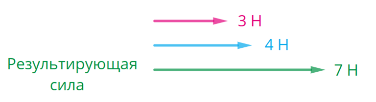
Пример: двое детей тянут санки, помогая друг другу. Поэтому результирующая сила всегда больше, чем сила тяги каждого ребёнка, взятая по отдельности.
2. Угол между векторами равен 180°. Если силы параллельны и противоположно направлены, то их модули вычитаются. Результирующая сила всегда положительна, так как разность берётся по модулю. Для вычислений используют формулу: Fрез = |F1 − F2|.
Пример: если санки тянуть по поверхности, на которой нет ни снега, ни льда, то сила трения действует противоположно силе тяги. Поэтому результирующая сила меньше, чем сила тяги.
3. Угол между векторами равен 90°. Если силы взаимно перпендикулярны, то их результирующая сила находится по теореме Пифагора. Обе силы являются катетами прямоугольного треугольника, а результирующая сила — гипотенузой. Для вычислений используют формулу: Fрез = √(F12 + F22).
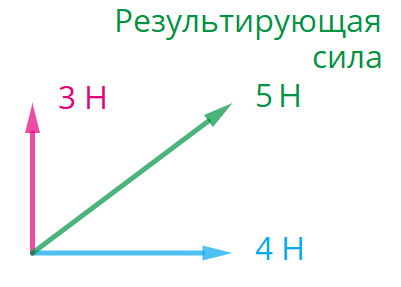
Пример: если ехать на велосипеде при сильном боковом ветре, то велосипед заносит в сторону, так как результирующая сила направлена в сторону от направления движения.
2. Принцип суперпозиции сил
Сила характеризуется: направлением, величиной, точкой приложения (началом вектора), геометрическое положение которой зависит от того, какая именно сила действует на тело.
Принцип суперпозиции: при действии на тело нескольких сил F1, F2...Fn, результирующая (равнодействующая) сила равна Fp = F1 + F2 + ... + Fn.
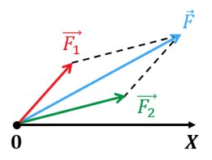
На рисунке изображён брусок, на который действуют сила тяжести mg, сила реакции опоры N и сила трения Fтр. Красным вектором обозначена результирующая сила Fрез.
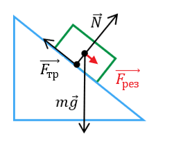
3. Второй закон Ньютона
Формулировка: ускорение тела прямо пропорционально равнодействующей сил, действующих на тело, и обратно пропорционально массе тела.
Масса m, входящая в формулировку второго закона Ньютона, называется инертной массой. На практике удобнее использовать форму:
Пример: запишем следствие из второго закона Ньютона для системы «поверхность — блок».
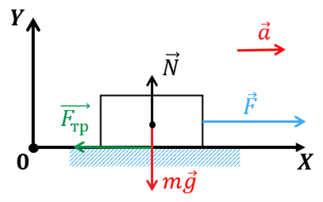
В горизонтальном направлении на блок действуют силы F и Fтр, тело имеет ускорение a. В вертикальном направлении на блок действуют силы mg и N, но ускорения нет. Следствия:
- в векторном виде: F + Fтр + mg + N = ma;
- в проекциях на оси OX и OY:
OX: F – Fтр = ma,
OY: N – mg = 0.
Чтобы рассчитать величину проекции результирующей силы, нужно определить проекции всех сил: Fx = F1x + F2x = F1cosα1 + F2cosα2, где α1 и α2 — углы между векторами сил и осью OX.
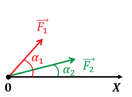
4. Третий закон Ньютона
Взаимодействие двух тел — это всегда двусторонний процесс.
Пример: процесс вбивания гвоздя молотком. Металлическая часть молотка воздействует на шляпку гвоздя, что вызывает сопротивление бруска при забивании гвоздя. Эта сила противодействует силе молотка. Поэтому молоток останавливается.

Проведём опыт. Сцепим два динамометра вместе. Показания динамометров будут одинаковы. Следовательно, динамометры взаимодействуют равными по модулю и противоположно направленными силами.
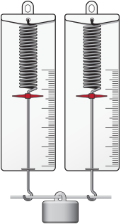
💡 Обрати внимание!
Тела действуют друг на друга с равными по модулю силами и в том случае, если взаимодействие происходит на расстоянии.
К одному из динамометров прикрепим металлический брусок, а к другому — магнит. Если начать сближать динамометры, стрелки начнут отклоняться в разные стороны. Силы взаимодействия магнита и бруска противоположны по направлению, а показания динамометров одинаковы.
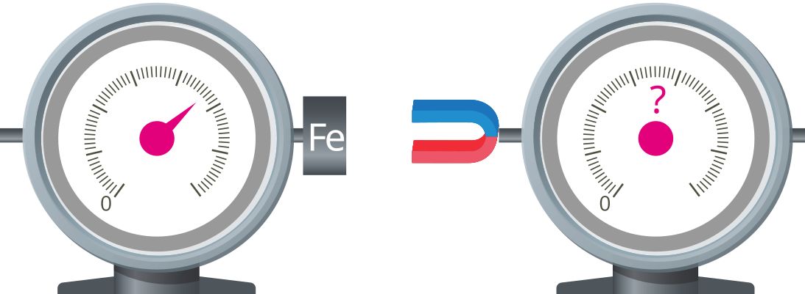
Третий закон Ньютона: Силы взаимодействия двух тел равны по величине, противоположно направлены, и действуют вдоль прямой, соединяющей эти тела:
Знак равенства обозначает, что действие равно противодействию. Знак минуса означает, что силы действуют противоположно направленно, их векторная сумма равна нулю. Например, метеорит падает на землю, поскольку Земля притягивает его с силой тяжести. Однако метеорит притягивает Землю с точно такой же по величине силой, но из-за огромной массы Земли её перемещение пренебрежимо мало.
💡 Обрати внимание!
Силы, возникающие в результате взаимодействия тел, являются силами одной природы.
Пример: все тела действуют на опору или подвес благодаря гравитации. Под действием силы тяжести опора деформируется: скамейка изгибается, полка под весом книг провисает. Опора стремится вернуть исходное положение, что вызывает силы упругости, с которыми опора воздействует на тело. Вес тела P приложен к опоре и направлен вертикально вниз к центру Земли. Противодействует весу сила реакции опоры N, поэтому она направлена перпендикулярно поверхности опоры.

Пример: два тела массами m1 и m2 помещены на гладкую горизонтальную плоскость и связаны нерастяжимой нитью. Ко второму телу приложена сила. Нить нерастяжима, значит, тела движутся с одинаковым ускорением. По третьему закону Ньютона T1 = -T2 и T1 = T2 = T. Складывая уравнения m1a = T и m2a = -T + F, получим: a·(m1 + m2) = F, откуда a = F / (m1 + m2).
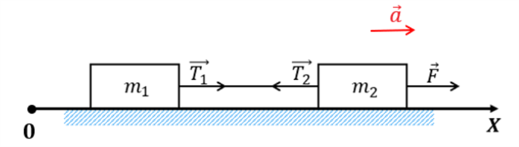
5. Сила тяжести. Закон всемирного тяготения
В современной науке взаимодействия разделяются на три типа: гравитационное, сильное (ядерное) и электрослабое. Гравитационное и электромагнитное взаимодействия являются дальнодействующими.
Одна из важнейших сил — сила гравитации. Сила взаимодействия двух тел прямо пропорциональна массе каждого из этих тел и обратно пропорциональной квадрату расстояния между центрами этих тел:
Физический смысл G: показывает, с какой силой притягиваются два тела массой 1 кг каждое на расстоянии 1 м.
Закон применяют, если: 1) тела точечные; 2) тела — два однородных шара; 3) тело неопределенной формы находится на поверхности большого шарообразного тела (Земли). За расстояние берём R = 6370 км.

Сила притяжения яблока к Земле равна силе притяжения Земли к яблоку по модулю: |Fя| = |Fз|. Силы противоположны по направлению: Fя = -Fз. Ускорение Земли настолько мало, что его не учитывают.

Инертная и гравитационная массы
По II закону Ньютона: F = mаa (mа — инертная масса). По закону тяготения для поверхности Земли: F = G·mгMз/R2 = mгg (mг — гравитационная масса). Приравнивая, получаем a = (mг/mа)·g.
Ускорение свободного падения
Ускорение свободного падения g = F/m. Объединяя формулы, получаем: g = G * M / R2. С помощью этой формулы можно вычислить g на любом космическом объекте.
Пример расчета для Земли: g = G·Mз/Rз2 = (6,6720·10–11 · 5,976·1024) / (6,371·106)2 = 9,8 м/с2.
На полюсах g немного больше (9,832 м/с²), чем на экваторе (9,78 м/с²), так как Земля не идеальный шар. Среднее значение — 9,8 м/с². Чем больше масса звезды и меньше её радиус, тем больше g. У нейтронных звезд g достигает 7·1012 м/с².
Закон Галилея: падение тел в одинаковых полях тяготения происходит с одинаковым ускорением.
Ситуация 1 (на поверхности): mg = GmM/R2 ⇒ g = GM/R2.
Ситуация 2 (на высоте h): mg = GmM/(R+h)2 ⇒ g = GM/(R+h)2.

6. Вес тела. Невесомость. Космические скорости
1. Космические скорости
Первая космическая скорость (v1) — наименьшая скорость для вращения в гравитационном поле планеты. Второй закон Ньютона для вращающегося тела: GmM/R2 = mv12/R.
Вторая космическая скорость (v2) — наименьшая скорость для преодоления гравитационного поля планеты.
Примечание: На высоте h, R заменяется на (R+h).
2. Вес на различных планетах
Масса (m, кг) — мера инертности и количество вещества. Вес (P, Н) — сила, с которой тело давит на опору или растягивает подвес.
В покое вес равен силе тяжести: P = m·g.
На Земле g в 6 раз больше, чем на Луне, поэтому космонавт массой 120 кг весит на Земле 1176 Н, а на Луне — 192 Н. На Солнце g в 28 раз больше, и его вес был бы 3355 кг (в эквиваленте).
3. Изменение веса при движении
Вес зависит от ускорения, с которым движется опора. Изменение веса связано с инерцией.
Вес увеличивается (перегрузка): когда лифт резко начинает движение вверх, при торможении вниз, в нижней точке американских горок. Ускорение направлено вверх. Формула: P = m(g + a).
Вес уменьшается (частичная невесомость): при езде по пригоркам (на вершине), когда лифт резко начинает движение вниз, в верхней точке горок, на качелях. Ускорение направлено вниз. Формула: P = m(g – a).
Невесомость: при свободном падении (a = g). Формула: P = 0.
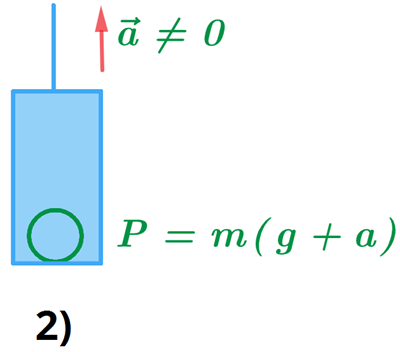
Пример: масса человека 80 кг. Лифт поднимается с ускорением 7 м/с². Вес на этапах:
- Лифт стоит: P = 80·9,8 = 784 Н.
- Разгон вверх: P = 80·(9,8+7) = 1334 Н.
- Равномерно: P = 784 Н.
- Торможение вверх: P = 80·(9,8-7) = 224 Н.
- Остановился: P = 784 Н.
4. Невесомость (опыты)
Если тело на опоре движется с ускорением к центру Земли: P = m(g – a).
Опыт с динамометром: в покое вес груза ~4 Н. При отпускании динамометра пружина стремится вернуться в недеформированное состояние, показания падают. В свободном падении вес равен нулю, взаимодействие между грузом и пружиной отсутствует.


Опыт с пакетом воды: если перевернуть пакет, вода перельется вниз под действием веса.


Если подбросить пакет, во время полета жидкость не переливается (находится в невесомости). Начальная скорость может быть любой.

Состояние невесомости тренируют в самолетах (свободное падение 30 секунд). Космонавты на МКС тоже в невесомости, так как станция постоянно падает на Землю, но движется с 1-й космической скоростью.
7. Сила упругости. Закон Гука
Если деформации образца малы и являются упругими, величина силы, стремящейся восстановить его геометрические параметры, прямо пропорциональна удлинению.
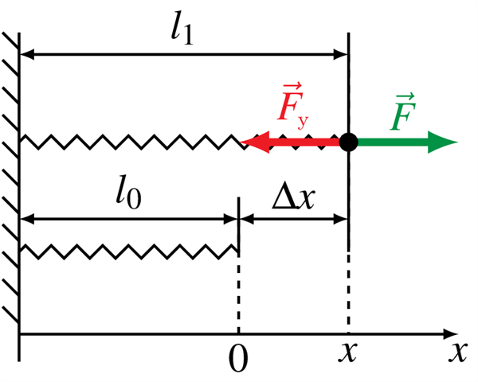
На рисунке 23 показаны:
- l0 — длина тела в исходном состоянии;
- l1 — длина тела в результате действия силы F;
- Δx = l1 - l0 — удлинение тела;
- F — внешняя сила, вызывающая изменение длины тела;
- Fу — сила упругости, равная по величине F.
Знак «минус» показывает, что Fy направлена противоположно направлению деформирующей силы.
8. Силы трения
Трение — процесс механического взаимодействия при относительном перемещении в плоскости контакта. Обусловлено электромагнитными силами (микронеровности + адгезия).
Виды: покоя, скольжения, качения.
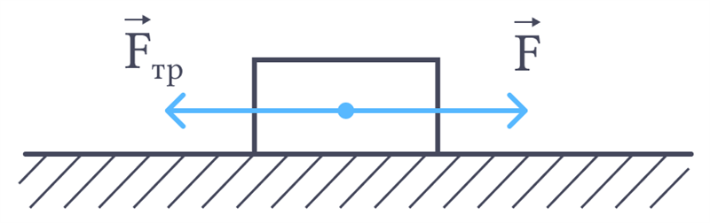
Трение покоя: если тело неподвижно, Fтр = -F. Если сила превысит максимальное значение, тело начнет скользить. Максимальная сила трения покоя: Fтр.max = μN (закон Кулона).
Трение скольжения: при небольших скоростях Fтр ≈ μN. Направлено противоположно скорости.
Сухое и жидкое трение: сухое — между твердыми телами (статическое и динамическое). Жидкое — между поверхностями есть жидкость-смазка (значительно снижает трение).
Сопротивление воздуха: зависит от скорости, формы, размеров. Обтекаемая форма уменьшает сопротивление. Потоки бывают ламинарными (низкая скорость) и турбулентными (высокая).
9. Равновесие тел. Момент силы
Равновесие — состояние, при котором все точки тела покоятся.
Виды равновесия:
- Устойчивое: при малом отклонении возникает сила, возвращающая тело в исходное положение.
- Неустойчивое: при малом отклонении возникает сила, уводящая тело ещё дальше.
- Безразличное: при отклонении тело остаётся в равновесии в новом положении.
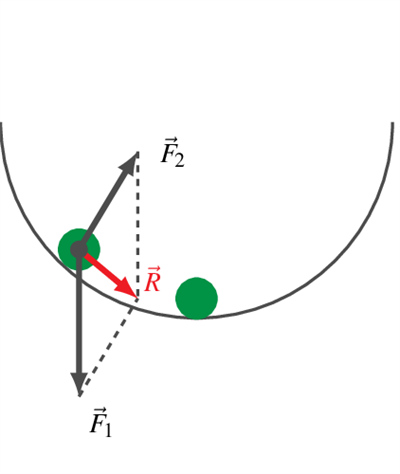
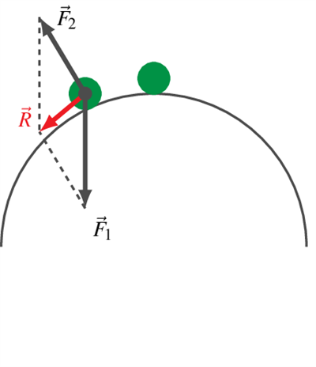
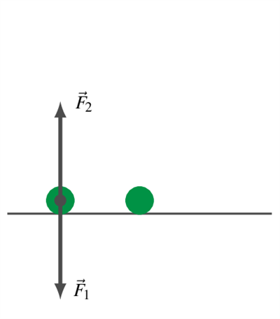
Абсолютно твёрдое тело — модель, деформации в котором отсутствуют. Заменяется точкой — центром масс. Для симметричных тел центр масс в центре симметрии. Точка приложения суммарной силы тяжести — центр тяжести. На поверхности Земли они совпадают.
Момент силы (M) — величина, равная произведению модуля силы F на её плечо l: M = F·l (Н·м).
Плечо силы (l) — кратчайшее расстояние от оси вращения до линии действия силы.
Против часовой стрелки: M > 0. По часовой: M < 0.
Условия равновесия твёрдого тела:
- Сумма всех сил равна нулю: F1 + F2 + ... + FN = 0.
- Алгебраическая сумма моментов сил относительно любой оси равна нулю: M1 + M2 + ... + MN = 0.
Условие равновесия материальной точки: векторная сумма сил равна нулю.
Действие на тело зависит от точки приложения силы (пример: дверная ручка всегда крепится далеко от петель, чтобы было легче открывать).
🩺 Связь с медициной (биомеханика)
- Центр тяжести человека. В анатомическом положении находится на уровне II крестцового позвонка (чуть выше таза).
- Устойчивость тела. Площадь опоры (стопы) и положение центра тяжести определяют устойчивость. При беременности центр тяжести смещается вперед (лордоз).
- Суставы как рычаги. Кости и мышцы образуют рычаги. Мышцы прикрепляются близко к суставу, проигрывают в силе, но выигрывают в скорости и амплитуде.
- Момент силы в суставах. Чем дальше от сустава приложена нагрузка, тем больше момент и выше риск травмы.
📝 Домашнее задание
Выполните тест и задачи для закрепления материала. Ответы скрыты — сдайте их через форму.
Тест (Выберите один правильный ответ)
1. Чем отличается вес тела от массы?
2. При каком условии возникает перегрузка?
3. Как направлена сила упругости?
Задачи для самостоятельного решения
- Задача 1. Космонавт массой 80 кг находится на Луне (g = 1,6 м/с²). Найдите его вес и массу.
- Задача 2. Лифт движется вниз с ускорением 2 м/с². Найдите вес человека массой 70 кг (g = 10 м/с²).
- Задача 3. Пружина жёсткостью 200 Н/м растянулась на 5 см. Найдите силу упругости.
- Задача 4. Брусок массой 5 кг тянут по горизонтальной поверхности с силой 20 Н. Коэффициент трения 0,3. Найдите ускорение бруска (g = 10 м/с²).